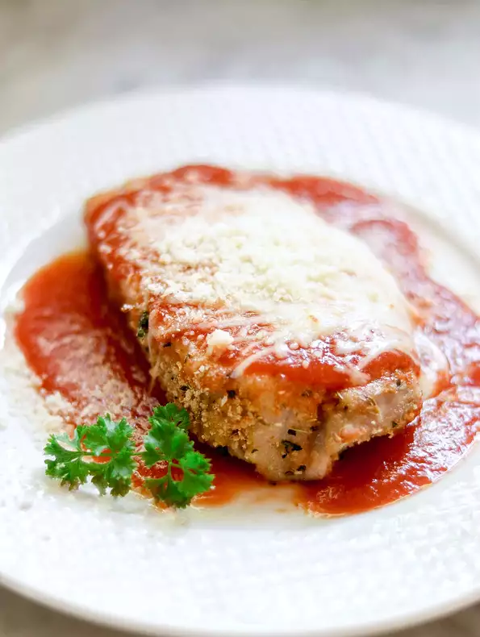

Chicken Parmesan

This is the best chicken ever!
- 1 pound skinless, boneless chicken breast halves
- 1 large egg, beaten
- ⅓ cup bread crumbs
- 2 tablespoons grated Parmesan cheese
- ¾ teaspoon Italian seasoning
- ½ teaspoon garlic powder
- 1 (8 ounce) can tomato sauce
- ¾ cup shredded mozzarella cheese
- Step 1 Preheat the oven to 375 degrees F (190 degrees C). Grease a baking sheet.
- Step 2 Pound chicken breasts to 1/2-inch thickness or less.
- Step 3 Place beaten egg in a bowl. Combine bread crumbs, Parmesan cheese, Italian seasoning, and garlic powder in another bowl. Dip each chicken breast in egg, then roll in bread crumb mixture to coat evenly. Place on the prepared baking sheet.
- Step 4 Bake in the preheated oven for 10 minutes. Turn and continue to cook until chicken is no longer pink in the center and juices run clear, about 10 minutes more. Let cool, 20 to 30 minutes.
- Step 5 Freeze in a 1-gallon resealable bag with smaller bags of tomato sauce and mozzarella cheese.
- Step 6 To serve: Thaw in the refrigerator overnight. Reheat chicken at 375 degrees F (190 degrees C) until heated through and crispy, 15 to 20 minutes. Top chicken with tomato sauce, sprinkle with mozzarella cheese, and bake until cheese is melted, an additional 3 minutes.